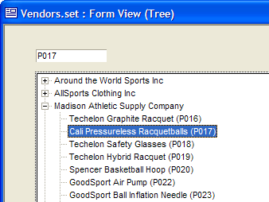
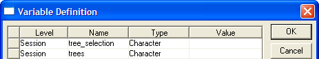

Displaying Values from a Set in a Tree Control
This sample demonstrates several different programming techniques.
How to extracting data from a set and format it for a tree control
How to identify the user's selection in the tree control
This example is based on the Vendors set of the AlphaSports sample database.

First, define two session variables to associate with the text box (named PID) that displays the Product_ID of the selected item and the tree control.

The first variable ( var->tree_selection ) is the source of data for the PID text box.
The Tree control shows three fields.
Vendor->Name
Product->Description
Product->Product_ID
Right click on the tree control, select Properties..., then display the Choices tab.
In the top list box select "Computed Automatically".
In the second list box select "ex
pression (that returns a CR-LF delimited list) Click the
 button in the Expression field
and enter the following expression.
button in the Expression field
and enter the following expression.
|
set.external_record_content_get("vendors", "alltrim(stritran(Vendor->Name,\".\",\"\") ) + \".\" + alltrim(Product->Description) + \" (\" + alltrim(Product->Product_ID) + \")\"") |
Since many people might find this expression difficult to understand, here is how it evolved.
Step 1
This expression represents the base syntax of the SET.EXTERNAL_RECORD_CONTENT_GET() method, which will return a list of fields from the Vendor set. Note the list of fields is inside quotation marks. We are going to substitute the quoted version of the following expression: alltrim(stritran(Vendor->Name, ".", "") ) + "." + alltrim(Product->Description) + " (" + alltrim(Product->Product_ID) + ")".
 Note:
SET.EXTERNAL_RECORD_CONTENT_GET() can only sort on fields in the primary
table and child tables linked one-to-one.
Note:
SET.EXTERNAL_RECORD_CONTENT_GET() can only sort on fields in the primary
table and child tables linked one-to-one.
|
set.external_record_content_get("vendors", "list of fields") |
S tep 2
The second argument of the expression is expanded to identify the fields we want.
|
set.external_record_content_get("vendors", "Vendor->Name + Product->Description + Product->Product_ID")") |
Step 3
Because the Vendor->Name field contains period "." characters, which serve as the tree control delimiter, we need to remove them with STRITRAN(). Note that is it necessary to add a backslash character before each quotation mark to distinguish it from the pair that delimit this overall expression.
|
set.external_record_content_get("vendors", "stritran(Vendor->Name,\".\",\"\") + Product->Description + Product->Product_ID")") |
Step 4
Next, we need to add a period character between the Vendor->Name and Product->Description fields. We need to put the Product->Product_ID field on the line. The solution is to put it between parentheses. Again, note that is it necessary to add a backslash character before each quotation mark to distinguish it from the pair that delimit this overall expression.
|
set.external_record_content_get("vendors", "alltrim(stritran(Vendor->Name,\".\",\"\") ) + \".\" + alltrim(Product->Description) + \" (\" + alltrim(Product->Product_ID) + \")\"") |
Add the following script to the on
change event of the tree control. Note that we are examining Tree1.text. If it is empty (which means the user expanded or contracted the list), we do nothing. If it contains a value, we extract the Product_ID value (which was surrounded by quotation marks) and stuff it into the PID text box. The Product_ID field is 12 characters long, so it is padded out with space characters.
|
dim cc as C if alltrim(Tree1.text) <> "" then cc = Tree1.text cc = word(cc, 2, "(") cc = word(cc, 1, ")") PID.value = padr(cc, 12, " ") parentform:PID.refresh() end if |
See Also